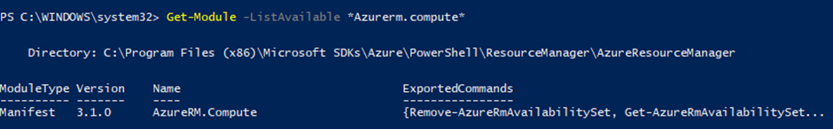
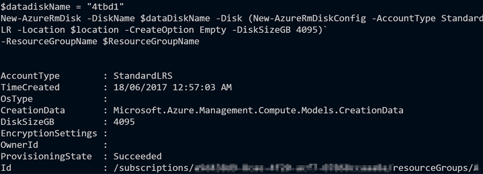
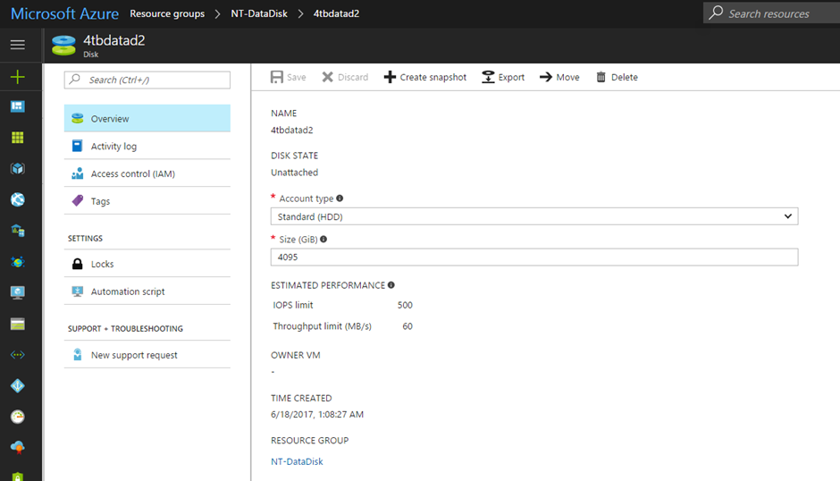
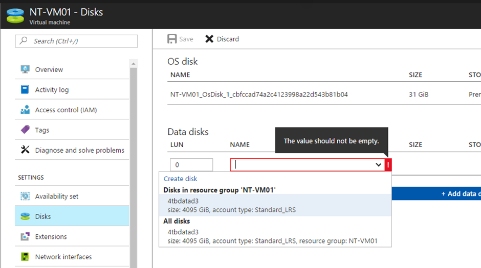
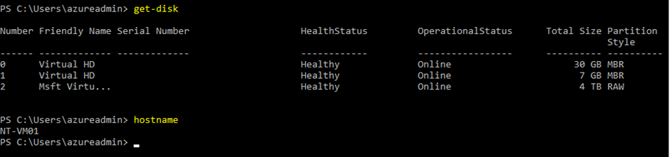
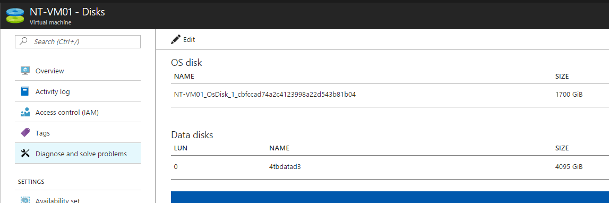

4TB Disk Support for Azure
Microsoft recently increased maximum Virtual disks size for all Azure datacentres. Now we can create disks up to 4TB and assign to Virtual machines. This also increases total capacity supported up to 256TBs per VM.
At the moment, we cannot create large disks or resize using the Azure Portal, and this needs to be done using an ARM template. Portal changes are planned to be rolled out within next few weeks along with the support for Azure backups and also Azure Site Recovery (Migration & DR).
Since the OS disks get created as a MBR drive, maximum supported for the OS disk is still limited at 2TB, however, Data disks can be attached up to 4TB of capacity.
In this blog post, let’s look at how we can create a 4TB Data disk using Resource Manager Templates and using PowerShell.
ARM Template for adding new 4TB Data disk for an existing VM
Step 01 – Making sure that you are running latest version of Azure PowerShell

Step 02 – create a managed disk using Azure Powershell
[code language=”powershell”]$ResourceGroupName = “NT-Proj01-RG1”
$location = “australiaeast”
$datadiskName = “4tbd1”
New-AzureRmDisk -DiskName $dataDiskName -Disk (New-AzureRmDiskConfig -AccountType StandardLR -Location $location -CreateOption Empty -DiskSizeGB 4095)`

-ResourceGroupName $ResourceGroupName[/code]
Looking at my resource group, I can now view my new disk resource

Step 03 – Attach new disks into a virtual machine
In my example below I’m using the Azure portal to assign our new 4TB disk which we created.

Hit save and the VM will get updated. After that, I’m going to login to the VM and have a look at the attached disk.

Using ARM Template
|
|
We can also extend existing disks both OS Disks and also Data disks using above-mentioned methods (Powershell or JSON Template). Below example, I have extended the OS drive from 31GB to 1700GB by specifying OS Disk size in the ARM Template.

More information, please have a look at below references
https://azure.microsoft.com/en-us/blog/azure-introduces-new-disks-sizes-up-to-4tb/?v=17.23h
https://docs.microsoft.com/en-us/azure/virtual-machines/windows/create-managed-disk-ps